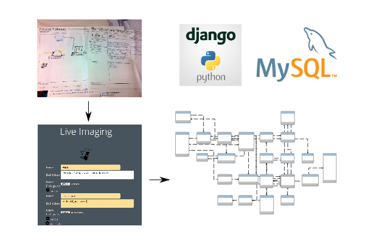

The Messy Knowledge of Lab Experiments
A Pragmatic Vocabulary for Communicating and
Managing Bench Protocols
Cameron McLean / @cammerschooner
PhD Candiate / University of Auckland

This work is licensed under a Creative Commons Attribution 4.0 International License.
Biology laboratory CC BY-SA 2.0 Eduardo from Bloomington, IN
Winchester House
Lab Protocols as Research Objects
CC-BY 2.0 laimagendelmundo
CC-BY 2.0 laimagendelmundo
CC-BY-NC-SA 2.0 wearn
Protocols as 1st Class
Digital Objects
Web addressible documents with structure and metadata.
- Ontologies
- Workflows
Ontologies
Mount larvae on their sides in 1.5% low melting point agarose in a glass-bottom dish filled with 0.3% Danieau's solution containing 0.01 mg/ml Tricane...
Tricane is a aminobenzic anesthetic agent.
NCBO annotator
Workflows
What + How
Context?
An alternate view
CC-BY-SA-NC 2.0 ecstaticist
Design Patterns

Christopher Alexander
Pattern "Forces"
Incorporating
Pattern Concepts
Mount larvae on their sides in 1.5% low melting point
agarose  in a glass-bottom dish
in a glass-bottom dish  filled with 0.3% Danieau's solution containing 0.01 mg/ml Tricane ...
filled with 0.3% Danieau's solution containing 0.01 mg/ml Tricane ...
Progress in realizing these ideas...
Design Patterns
as Vocabulary
Pattern Mining
Knowledge Elicitation
Pattern Schema

RDF Mapping
Authoring and Publishing
Structured Protocols
HTML + RDFa
Ballance between free-form and structured metadata.
Use existing tools.
Use existing tools.
LabTrove + RDFaCE
Overview
Benefits
- Protocols as web addressable documents with URIs
- WYSIWYG authoring for scientists
- Embedded semantic and pragmatic metadata (WYSIWYM)
- Minimal disruption to exisiting workflows
- All the affordances of linkable, forkable, citable, and semantic/machine readable formats
THE END
Thanks to
Mark Gahegan / Fabiana Kubke / Siouxsie Wiles / CeR
Credits and References
Search Patterns - Peter Morville, Jeffery Callender
The Noun Project
Search Patterns - Peter Morville, Jeffery Callender
The Noun Project
Light bulb - Chris Brunskill
Transmission -Anna Donlin
Surveillance - Marwa Boukarim
Reveal.js / Hakim El Hattab